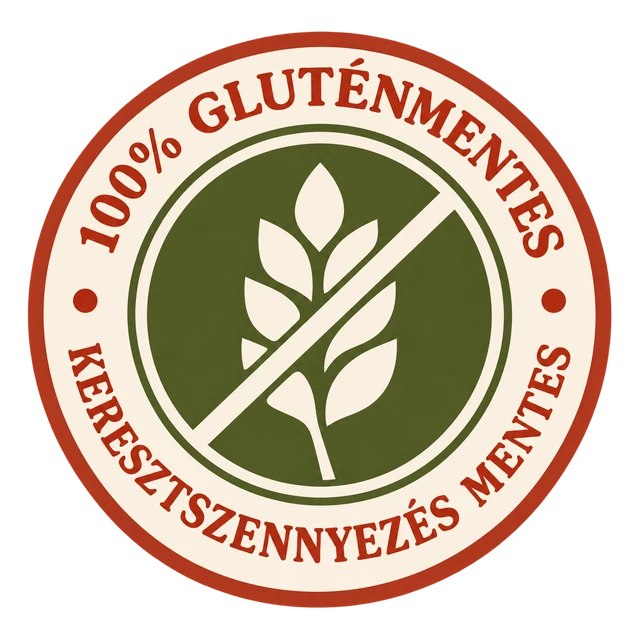
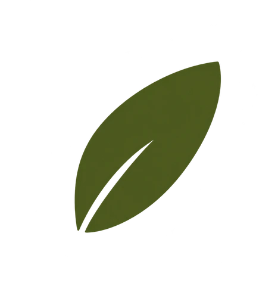
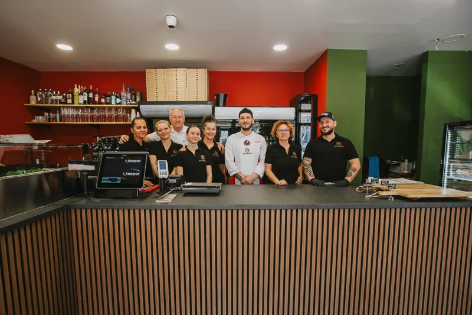

A hely, ahol a
MENTES = FINOM!
Felejtsd el a száraz, morzsálódó kenyeret, az ízetlen pizzatésztát és a fanyar sütiket! Nálunk frissen sült nápolyi pizzák, kézműves kenyerek és sütemények várnak, mind gluténmentesen.
Készen állsz a gluténmentes forradalomra?
A GlutiliNO Európa kiváló pizzériái között!
Bekerültünk a 2026-os 50 Top Pizza Europa Excellent Pizzerias válogatásába! Különösen büszkék vagyunk rá, hogy gluténmentes pizzáinkkal a hagyományos pizzákkal is felvesszük a versenyt!
Elolvasom a cikketGluténmentes pizza,
péksütemény és desszert.
Egy pizza, egy friss cipó vagy valami édes? Nálunk minden gluténmentes, de az ízekből nem engedünk. Kattints a képekre, és nézd meg, miből válogathatsz
Gluténmentes pizzatészta,48 órán át érlelve.
A jó pizzához idő, tapasztalat és gondosan válogatott alapanyagok kellenek. Mi mindháromra odafigyelünk.
Időt adunk a tésztának
Gluténmentes pizzatésztánkat legalább 48 órán át érleljük. Pizzáink közepe vékony, abroncsuk roppanós és szépen felhólyagosodott, pont úgy, ahogy egy jó nápolyi pizzának.
Nápolyból hozott tudás
Alex, a GlutiliNO társtulajdonosa és séfje közel nyolc évet töltött Nápolyban, ahol alaposan megismerte az olasz pizzakészítés hagyományait és fortélyait. Az ott szerzett tapasztalatát ma a GlutiliNO gluténmentes pizzáinál kamatoztatja.
Saját recept, olasz alapanyagok
Gluténmentes pizzatésztánkat Alex saját receptje alapján készítjük. A feltétekhez használt alapanyagok jelentős része pedig egyenesen Olaszországból érkezik.
100% gluténmentes.
100% élmény.
Nálunk a gluténmentesség az egész kínálat alapja. A pizzától a frissen sült kenyéren át a desszertig.
Azért dolgozunk, hogy együtt élvezhessétek az olasz konyhát, akár gluténmentesen étkeztek, akár egyszerűen egy finom pizzára vágytok.
Más ételallergiád is van? A gluténmentes nem jelent minden allergéntől mentest. Rendelés előtt egyeztess munkatársainkkal az összetevőkről és az elkészítésről.


A GlutiliNO története:Nápolyból Budapestre.
Alex szakmai útja és Kinga személyes története egy közös asztalnál találkozott.
Alex a nápolyi pizzakészítés világából érkezett. Kinga személyes kötődése a gluténmentes étkezéshez pedig megmutatta, miért fontos, hogy a jó ételek élményéből senki se maradjon ki.
Ebből a közös gondolatból született meg a GlutiliNO: egy pizzéria és pékség, ahol az olasz ízek és a gluténmentes szemlélet természetesen összetartoznak.
Hol találsz minket?
Vendégeink véleménye
a GlutiliNO-ról.
„Barátságos, ízletes és gyors kiszolgálás.”
„Mintha Nápolyban ettünk volna, csak gluténmentesen.”
„Isteni ízek, kedves kiszolgálás és kiváló hangulat.”
Hol találsz meg minket?
ITT TALÁLSZ MINKET1138 Budapest, Párkány utca 8.NYITVATARTÁSHétfő–vasárnap 11:00–22:00TELEFON+36 30 074 3932Ünnepnapokon a nyitvatartás változhat. Indulás előtt hívj minket.